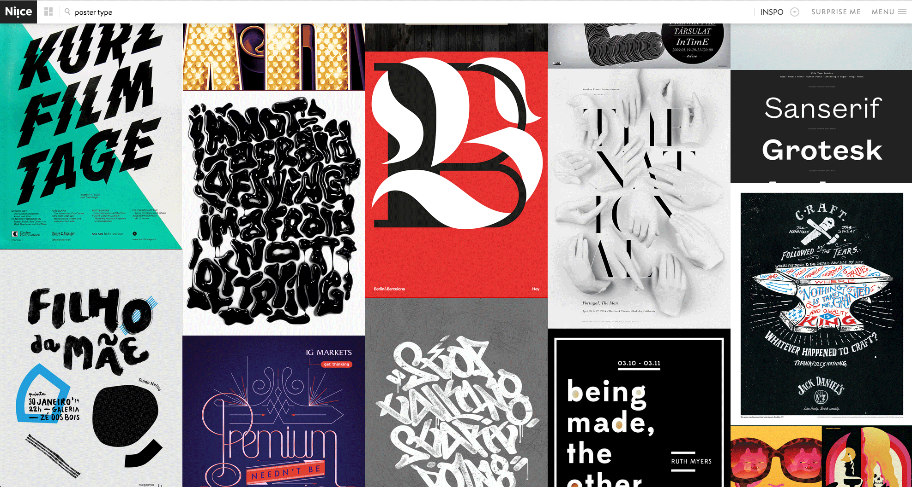
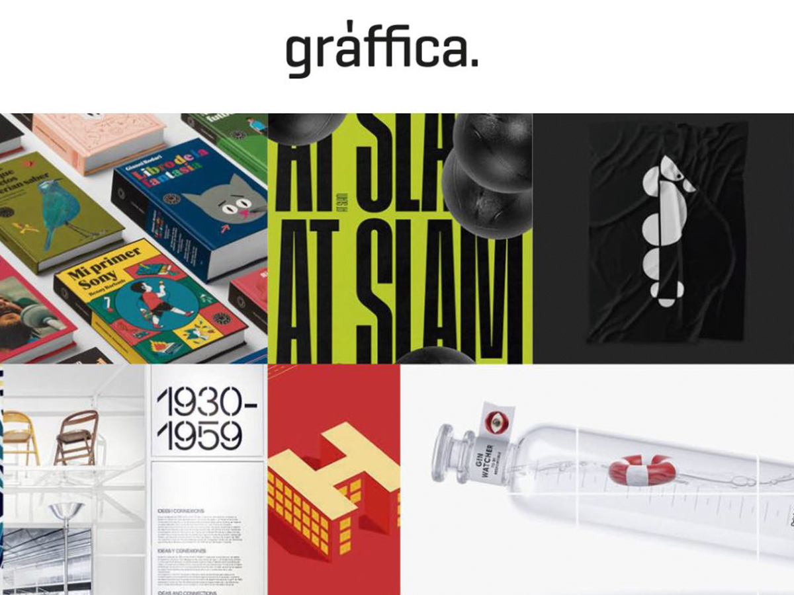

Creative Review
Creative Review ha unido a la comunidad creativa desde 1980, primero como una revista impresa y
ahora en más plataformas que nunca. Brindamos la opinión, el análisis y el asesoramiento más agudos sobre la vida en
las industrias creativas. link pagina web

Web Designer Depot
WebdesignerDepot ha estado en el corazón de la industria del diseño web. Fundada en 2008 (un eón en términos web),
hemos sido testigos de cambios revolucionarios en los últimos años: vimos la acuñación del diseño web responsivo y su adopción como estándar
de la industria; observamos el ascenso y ascenso de la web móvil link pagina web

Niice
Niice es un motor de búsqueda francamente original e ideal para aquellas personas que busquen inspiración y quieran
encontrar imágenes más allá de la representación estándar del concepto que estemos buscando. Desplegará todo tipo de ideas conceptuales,
obras de arte, figuras extrañas, etc. link pagina web

Graffica
Gráffica es un medio dedicado en exclusiva al mundo del diseño,
y en especial al ámbito del diseño gráfico, la creatividad y la cultura visual.
Su vocación es crear un espacio donde los profesionales tengan un punto de información y
referencia de lo que acontece en su sector. Así mismo, su interés es crear una plataforma
que genere actividades complementarias, tanto en el ámbito de la información y divulgación, como
en el ámbito de la formación, para ayudar a los profesionales a mejorar y reforzar su actividad.
link pagina web

Design Milk
Design Milk es una revista en línea dedicada al diseño moderno que ofrece las últimas actualizaciones en arte,
arquitectura, diseño de interiores, muebles y decoración, moda y tecnología. artistas, cientos de minoristas, editores de revistas y
presentadores y diseñadores de HGTV. link pagina web

A Beautiful Mess
The A Beautiful Mess blog was founded in 2007. Since then, we’ve published over 5,000 posts. You can expect all
kinds of recipes, craft projects, room tours, and more. link pagina web